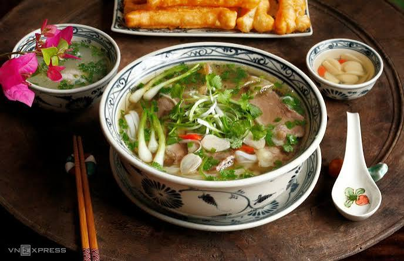
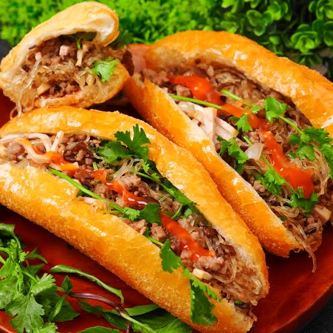
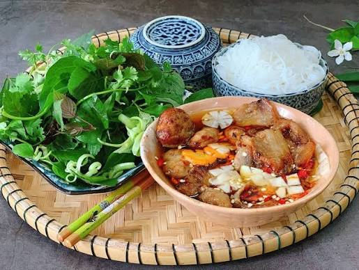

Popular Food
Hanoi is famous for its traditional food. Here are some dishes that visitors can try.

Pho
Pho is a traditional Vietnamese noodle soup and one of the most famous dishes in Hanoi.

Banh Mi
Banh mi combines a crispy baguette with a variety of flavorful fillings.

Bun Cha
Bun cha is a Hanoi specialty served with grilled pork, rice noodles, herbs, and dipping sauce.